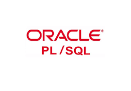

Tatiana Linck de Faria
Cidade: Brasília
Telefone: (61) 98283-5408
Email: tati.linck@gmail.com
Objetivo:
Voltar a programar só que para WEB e adicionar
novas atividades ao meu curriculo.
Formação:
Graduação em Análise de Sistemas
UNIP - Universidade de São Paulo
Experiência:
Desemvolvedor Delphi - Borland Delphi
Desenvolver sistemas legados para a empresa em Delphi.

Oracle - PL/SQL
Executar a manutenção dos sistemas, fazendo eventuais correções
necessárias para atender às necessidades dos usuários.
Desenvolve trabalhos de montagem, depuração e testes de
programas, executando serviços de manutenção nos programas já
desenvolvidos.
Habilidades:
- Delphi
- Oracle - PL/SQL
- MySQL